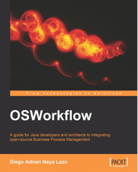

OSWf - Open Source Workflow
This website was created .... brief statement of intent/introduction
Software License
Components, source code, and programming techniques are freely available without restriction and is licensed under the terms of the MIT License, which is one of the most liberal open source licenses available.
Packt Pub book on OSWorkflow
Although written for OpenSymphony OSWorkflow in 2007 this book is very relevant to using OSWf. It contains an excellent introduction to workflow systems in general and OSWorkflow in particular.
I have read and reread this book countless times in learning OSWorkflow and in preparing to fork the OSWorkflow project into OSWf.
 OSWorkflow: A guide for Java developers and architects to integrating open-source Business Process Managementby Diego Adrian Naya Lazo
ISBN-10: 1847191525
ISBN-13: 978-1847191526
Available from: